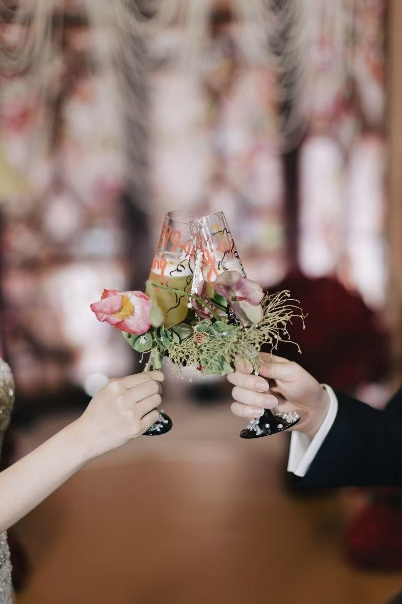

➡️Reminder:Scroll down and right-click on the image and select "Open image in new tab" to view it in full size.⬅️
The first five photos were taken in Macao. The girl I photographed wanted a vintage, cool vibe, so I used a Fujifilm camera with a classic filter that perfectly matched Macao’s nostalgic tones and atmosphere.
The next three photos were taken in Altay during snowfall. The colors, the harmony between the person and the snowy background, created a poetic and cinematic feeling.
The first three photos were shot by the seaside in Tai Po Market, Hong Kong, using a film camera to create a light and airy, Japanese-inspired style.
The next three were captured in the wet market of Causeway Bay, where the lively urban setting added a unique sense of everyday realism to the portraits.
This section features portraits that highlight the connection between people and their pets. Shot on film, these photos focus on warmth, companionship, and love — capturing the kind of gentle emotions that make a photo feel like a memory.
These photos were taken at my friend’s sister’s wedding. I captured candid moments, from the emotional expressions to the delicate details — like the couple toasting and the close-up of their hands holding the glasses. It’s about preserving intimacy and joy in timeless frames.